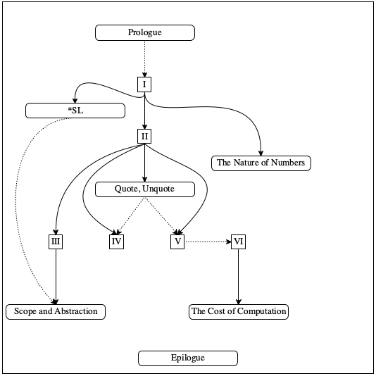

Preface
Многие профессии требуют некоторой формы программирования. Бухгалтера программируют таблицы; музыканты программируют синтезаторы; авторы программируют текстовые процессоры; и веб-дизайнеры программируют таблицы стилей. Когда мы писали эти слова для первого издания книги (1995–2000), читатели, возможно, сочли их футуристическими; К настоящему времени программирование стало обязательным навыком, и многочисленные источники - книги, онлайн-курсы, учебные программы K-12 - удовлетворяют эту потребность, всегда с целью улучшения перспектив трудоустройства людей.
Типичный курс программирования учит подходу “возиться, пока не заработает“. Когда это работает, студенты восклицают: “Работает!“ и идем дальше. К сожалению, эта фраза также является кратчайшей ложью в вычислительной технике и стоила многим людям многих часов их жизни. Напротив, эта книга фокусируется на навыках хорошего программирования, адресована как специалистам, так и профессиональным программистам.
Под “хорошим программированием“ мы подразумеваем подход к созданию программного обеспечения, основанный на систематическом мышлении, планировании и понимании с самого начала, на каждом этапе и на каждом шаге. Чтобы подчеркнуть этот момент, мы говорим о систематической разработке программ и систематически разработанных программах. Что особенно важно, последнее формулирует обоснование желаемой функциональности. Хорошее программирование также удовлетворяет эстетическое чувство выполненного долга; Элегантность хорошей программы сравнима с проверенными временем стихами или черно-белыми фотографиями ушедшей эпохи. Короче говоря, программирование отличается от хорошего программирования, как наброски карандашом в закусочной от картины маслом в музее.
каждый может разрабатывать программы
каждый может испытать удовлетворение от креативной разработки.
разработка программ, но не прграммирование— заслуживает той же роли в гуманитарном образовании, что и математика и языковые навыки.
Systematic Program Design
Программа взаимодействует с людьми, называемыми пользователями и другими программами, и в этом случае мы говорим о серверных и клиентских компонентах. Следовательно, любая достаточно полная программа состоит из множества строительных блоков: некоторые имеют дело с вводом, некоторые создают вывод, а некоторые ликвидируют разрыв между этими двумя. Мы предпочитаем использовать функции в качестве фундаментальных строительных блоков, потому что каждый сталкивается с функциями в пре-алгебре и потому, что простейшие программы являются именно такими функциями. Главное - выяснить, какие функции необходимы, как их соединить и как построить их из базовых ингредиентов. .
В этом контексте “систематическая разработка программы“ означает сочетание двух концепций: рецептов разработки и итеративного уточнения. Мы черпали вдохновение в методе Майкла Джексона для создания программ на языке COBOL, а также в беседах с Дэниелом Фридманом о рекурсии, Робертом Харпером о теории типов и Дэниелом Джексоном о разработке программного обеспечения. Рецепты разработки - открытие авторов, и здесь они их активно используют.
От анализа проблем к определению данных
Определите, какая информация должна быть представлена и как она представлена на выбранном языке программирования. Сформулируйте определения данных и проиллюстрируйте их примерами.
Сигнатура, Предназначение(Формулировка Цели), Заголовок
Укажите, какие данные использует и производит желаемая функция. Сформулируйте краткий ответ на вопрос, что вычисляет функция. Определите заглушку, соответствующую сигнатуре.
Функциональные примеры
Проработайте примеры, иллюстрирующие назначение(цели) функции.
Шаблон Функции
Переведите определения данных в план(набросок) функции.
Определение функции
Заполните пробелы в шаблоне функции. Используйте предназначение и примеры.
Тестирование
Сформулируйте примеры как тесты и убедитесь, что функция проходит все тесты. Так вы обнаружите ошибки. Тесты также дополняют примеры в том смысле, что они помогают другим прочитать и понять определение, когда в этом возникнет необходимость - а она возникнет для любой серьезной программы.
Рисунок 1: Основные шаги рецепта разработки функции
Рецепты разработки применимы как к законченным программам, так и к отдельным функциям. В этой книге есть всего два рецепта для законченных программ: один для программ с графическим пользовательским интерфейсом (GUI) и один для пакетных программ. Напротив, рецепты проектирования функций бывают самых разных видов: для атомарных форм данных, таких как числа; для перечисления разного рода данных; для данных, которые фиксированным образом объединяют другие данные; для конечных, но произвольно больших данных; и так далее.
Рецепты разработки на функциональном уровне имеют общий процесс разработки(проектирования). На рисунке 1 показаны шесть его основных шагов. Название каждого шага указывает ожидаемый результат(ы); "команды" предлагают ключевые действия. Примеры играют центральную роль почти на каждом этапе. Преподавателям Попросите учащихся скопировать Рисунок 1 на одной стороне каталожной карточки. Когда ученик застрянет, попросите его предъявить карточку и указать ступеньку, на которой он застрял. Для выбранного представления данных на шаге 1 запись примеров показывает, как реальная информация кодируется как данные и как данные интерпретируются как информация. В шаге 3 говорится, что специалист по решению проблем должен проработать конкретные сценарии, чтобы понять, что ожидаемая функция будет вычислять для конкретных примеров. Это понимание используется на шаге 5, когда пора определять функцию. Наконец, шаг 6 требует, чтобы примеры были преобразованы в автоматизированный тестовый код, который гарантирует правильную работу функции в некоторых случаях. Запуск функции на реальных данных может выявить другие расхождения между ожиданиями и результатами.
На каждом этапе процесса разработки возникают острые вопросы, которые задаются в шести частях книги. Для определенных шагов - например, создания функциональных примеров или шаблона - вопросы могут относиться к определению данных. Ответы почти автоматически создают промежуточный продукт. Преподаватели. Наиболее важные вопросы относятся к шагам 4 и 5. Попросите студентов записать эти вопросы своими словами на обратной стороне их индексных их карточек. Эти строительные леса окупаются, когда приходит время сделать один творческий шаг в процессе: завершить определение функции. И даже тогда доступна помощь практически во всех случаях.
Новизна этого подхода - создание промежуточных продуктов для программ начального уровня. Когда новичок застрял, эксперт или инструктор могут проверить существующие промежуточные продукты. В ходе инспекции, вероятно, будут использоваться общие вопросы из процесса проектирования, что побудит новичка исправить себя. И этот процесс саморазвития - ключевое различие между программированием и разработкой программ.
Итеративное уточнение решает проблему сложности и многогранности проблем. Сделать все сразу сразу практически невозможно. Вместо этого компьютерные ученые заимствуют итеративное уточнение у физических наук, чтобы решить эту проблему проектирования. По сути, итеративное уточнение рекомендует сначала отбросить все несущественные детали и найти решение оставшейся основной проблемы. Шаг уточнения добавляет одну из этих пропущенных деталей и повторно решает расширенную проблему, максимально используя существующее решение. Повторение, также называемое итерацией, этих этапов уточнения в конечном итоге приводит к полному решению.
В этом смысле программист - миниатюрный ученый. Ученые создают приблизительные модели для какой-то идеализированной версии мира, чтобы делать прогнозы относительно него. Пока прогнозы модели сбываются, все в порядке; когда предсказанные события отличаются от реальных, ученые пересматривают свои модели, чтобы уменьшить расхождение. Аналогичным образом, когда программистам дается задача, они создают первую разработку, превращают её в код, оценивают её с реальными пользователями и итеративно уточняют разработку, пока поведение программы не будет точно соответствовать желаемому продукту.
Эта книга представляет итеративное уточнение двумя разными способами. Поскольку проектирование посредством уточнения становится полезным даже тогда, когда проектирование программ становится сложным, книга подробно знакомит с этой техникой в четвертой части, когда проблемы приобретают определенную степень сложности. Кроме того, мы используем итеративное уточнение, чтобы формулировать все более сложные варианты одной и той же проблемы в течение первых трех частей книги. То есть мы выбираем основную проблему, рассматриваем ее в одной главе, а затем ставим аналогичную проблему в следующей главе - с деталями, соответствующими недавно введенным концепциям.
DrRacket и языки обучения
Чтобы научиться разрабатывать программы, нужно постоянно практиковаться. Подобно тому, как никто не становится пианистом, не играя на пианино, никто не становится разработчиком программ, не создавая настоящие программы и не заставляя их работать должным образом. Следовательно, наша книга поставляется с минимальной поддержкой программного обеспечения: языком, на котором можно писать программы, и средой разработки программ, с помощью которой программы редактируются как текстовые документы и с помощью которой читатели могут запускать программы.
Многие люди, с которыми мы сталкиваемся, говорят нам, что хотели бы узнать, как кодировать, а затем спрашивают, какой язык программирования им следует изучить. Учитывая рекламу, которую получают некоторые языки программирования, этот вопрос неудивителен. Но это тоже совершенно неуместно. Инструкторы Для курсов, не предназначенных для начинающих, можно использовать стандартный язык с рецептами разработки. Обучение программированию на модном в настоящее время языке программирования часто приводит студентов к неудачам. Мода в этом мире очень недолговечна. Типичная книга или курс "Быстрое программирование в X" не может научить принципам, которые переносятся на следующий язык моды. Хуже того, сам язык часто отвлекает от приобретения передаваемых навыков на уровне как выражения решений, так и исправления ошибок программирования.
Напротив, обучение разработке программ - это прежде всего изучение принципов и приобретение передаваемых навыков. Идеальный язык программирования должен поддерживать эти две цели, но ни один стандартный промышленный язык не поддерживает этого. Ключевой проблемой является то, что новички совершают ошибки еще до того, как овладевают языком в значительной степени, однако языки программирования всегда диагностируют эти ошибки, как если бы программист уже знал весь язык. В результате диагностические отчеты (об ошибках) часто ставят в тупик новичков.
Наше решение - начать с нашего собственного индивидуального языка обучения, получившего название “язык для начинающих студентов“ или (Beginning Student Language)BSL. По сути, этот язык является “иностранным“ языком, который студенты изучают на курсах предварительной алгебры. Он включает обозначения для определений функций, применения функций и условных выражений. Также выражения могут быть Преподаватели Вы можете объяснить, что BSL - это предварительная алгебра с дополнительными формами данных и множеством предопределенных функций для них. вложенными. Таким образом, этот язык настолько мал, что диагностика ошибок в терминах всего языка по-прежнему доступна читателям, у которых нет ничего, кроме предалгебры.
Студент, овладевший принципами структурного проектирования, может затем перейти к “промежуточному студенческому языку“(Intermediate Student Language) и другим продвинутым диалектам, совместно именуемым *SL. В книге эти диалекты используются для обучения принципам абстракции и общей рекурсии. Мы твердо уверены, что использование такой серии языков обучения дает читателям превосходную подготовку к созданию программ для широкого спектра профессиональных языков программирования (JavaScript, Python, Ruby, Java и других).
Примечание. Языки обучения реализованы в Racket, языке программирования, который мы создали для создания языков программирования. Racket ускользнул из лаборатории в реальный мир, и это средство программирования, которое выбирают в самых разных условиях, от игр до управления массивами телескопов. Хотя языки обучения заимствуют элементы из языка Racket, эта книга не учит Racket. Опять же, студент, который изучил эту книгу, может легко перейти к Racket. Конец
Когда дело доходит до среды программирования, мы сталкиваемся с таким же плохим выбором, как и при выборе языков. Среда программирования для профессионалов аналогична кабине гигантского реактивного самолета. Она имеет множество элементов управления и дисплеев, которые непостижимы для любого, кто впервые запускает такое программное приложение. Начинающим программистам нужен эквивалент двухместного одномоторного винтового самолета, с которым они могут практиковать базовые навыки. Поэтому мы создали DrRacket, среду программирования для новичков.
DrRacket поддерживает очень увлекательное, ориентированное на обратную связь обучение с помощью всего двух простых интерактивных панелей: области определений, которая содержит определения функций, и области взаимодействий, которая позволяет программисту запрашивать оценку(вычисление) выражений, которые могут относиться к определениям. В этом контексте исследовать сценарии “что, если“ так же легко, как и в приложении для работы с электронными таблицами. Экспериментирование можно начать при первом контакте, используя обычные примеры в стиле калькулятора и быстро переходя к вычислениям с изображениями, словами и другими формами данных.
Интерактивная среда разработки программ, такая как DrRacket, упрощает процесс обучения двумя способами. Во-первых, она позволяет начинающим программистам напрямую манипулировать данными. Поскольку никаких средств для чтения входной информации из файлов или устройств не требуется, новичкам не нужно тратить драгоценное время на выяснение того, как они работают. Во-вторых, такая организация строго отделяет данные и манипуляции с ними от ввода и вывода информации из “реального мира“. В настоящее время это разделение считается настолько фундаментальным для систематического проектирования программного обеспечения, что оно носит собственное название: архитектура модель-представление(вид)-контроллер(MVC). Работая в DrRacket, новые программисты с самого начала естественным образом знакомятся с этой фундаментальной идеей программной инженерии.
Передаваемые навыки
Приобретенные в процессе обучения навыки разработки программ систематически передаются по двум направлениям. Естественно, они применимы как к программированию в целом, так и к программированию электронных таблиц, синтезаторов, таблиц стилей и даже текстовых процессоров. Наши наблюдения показывают, что процесс проектирования из рисунка 1 переносится практически на любой язык программирования и работает как для программ из 10 строк, так и для программ из 10 000 строк. Требуется некоторое размышление, чтобы адаптировать процесс проектирования ко всему спектру языков и масштабам проблем программирования; но как только процесс становится второй натурой, его использование окупается во многих отношениях.
Учиться разрабатывать программы также означает приобретать два вида универсально полезных навыков. Разработка программ, безусловно, учит тем же аналитическим навыкам, что и математика, особенно (до) алгебре и геометрии. Но, в отличие от математики, работа с программами - это активный подход к обучению. Создание программного обеспечения обеспечивает немедленную обратную связь и, таким образом, ведет к исследованиям, экспериментам и самооценке. Результатом, как правило, являются интерактивные продукты, подход, который значительно увеличивает чувство выполненного долга по сравнению с упражнениями в учебниках.
Помимо улучшения математических навыков учащегося, разработка программ учит аналитическим навыкам чтения и письма. Даже самые маленькие задачи разработки формулируются в виде текстовых задач. Без прочных навыков чтения и понимания невозможно создавать программы, которые решают достаточно сложные задачи. И наоборот, методы разработки программ заставляют создателя излагать свои мысли правильным и точным языком. Действительно, если студенты действительно усваивают рецепт разработки, они улучшают свои навыки артикуляции больше, чем что-либо еще.
-
проанализировать постановку проблемы, обычно формулируемую в виде слова - проблема(задача/problem);
-
извлечь и выразить её суть, абстрактно;
-
проиллюстрировать суть примерами;
-
составить наброски и планы на основе этого анализа;
-
оценинить результаты относительно ожидаемых результатов; и
-
пересмотреть продукт(результат) в свете неудавшихся проверок и тестов.
Каждый шаг требует анализа, точности, описания, сосредоточенности и внимания к деталям. Любой опытный предприниматель, инженер, журналист, юрист, ученый или любой другой профессионал может объяснить, сколько из этих навыков необходимо для его повседневной работы. Практика разработки программ - на бумаге и в DrRacket - это приятный способ приобрести эти навыки.
Точно так же очистка процесса разработки не ограничивается информатикой и созданием программ. Этим занимаются и архитекторы, композиторы, писатели и другие профессионалы. Они начинают с идей в голове и каким-то образом формулируют их суть. Они уточняют эти идеи на бумаге, пока их продукт не будет в максимальной степени отражать их мысленный образ. Когда они воплощают свои идеи на бумаге, они используют навыки, аналогичные полностью усвоенным рецептам разработки: рисование, письмо или игра на фортепиано, чтобы выразить определенные элементы стиля здания, описать характер человека или сформулировать части мелодии. Что делает их продуктивными в итеративном процессе разработки, так это то, что они усвоили свои основные рецепты проектирования и научились выбирать, какой из них использовать в текущей ситуации.
Эта книга и ее части
Цель этой книги - познакомить читателей без предварительного опыта с систематическим проектированием(разработкой) программ. В тандеме она представляет собой символическое представление вычислений, метод, объясняющий, как работает применение программы к данным. Грубо говоря, этот метод обобщает то, что учащиеся изучают по арифметике в начальной школе и по алгебре в средней школе. Но не бойтесь. DrRacket поставляется с механизмом - алгебраическим пошаговым исполнителем - который может иллюстрировать эти пошаговые вычисления.
Книга состоит из шести частей, разделенных пятью интермеццо, и дополнена Прологом и Эпилогом. В то время как основные части сосредоточены на разработке программ, промежуточные части(интермецо) вводят дополнительные концепции, касающиеся механизмов программирования и вычислений.
-
Данные фиксированного размера объясняет наиболее фундаментальные концепции систематического проектирования на простых примерах. Основная идея заключается в том, что разработчики обычно имеют приблизительное представление о том, какие данные программа должна потреблять(использовать) и производить(возвращать). Системный подход к проектированию, следовательно, должен извлекать как можно больше подсказок из описания данных, которые поступают в программу и исходят из нее. Чтобы упростить задачу, эта часть начинается с атомарных данных - чисел, изображений и т.д. - а затем постепенно вводятся новые способы описания данных: интервалы, перечисления, детализация, структуры и их комбинации.
-
Интермеццо 1: Язык для начинающих учеников описывает язык обучения во всех деталях: его словарный запас, его грамматику и его значения. Ученые-компьютерщики называют это синтаксисом и семантикой. Разработчики программ используют эту модель вычислений для прогнозирования вычислений при запуске или для анализа диагностики ошибок.
-
Произвольно большие данные(Arbitrarily Large Data) расширяет Данные фиксированного размера средствами для описания наиболее интересных и полезных форм данных: произвольно больших составных данных. Хотя программист может вкладывать типы данных из раздела Fixed-Size Data(Данные Фиксированного Размера) для представления информации, вложенность всегда имеет фиксированную глубину и ширину. В этой части показано, как тонкое обобщение приводит нас к данным произвольного размера. Затем основное внимание уделяется систематическому проектированию программ, обрабатывающих такие данные.
-
Intermezzo 2: Quote(цитирование), Unquote(отмена цитирования) вводит краткую и мощную нотацию для записи больших фрагментов данных: цитаты и отмену цитаты.
-
Абстрагирование(Abstraction) признает, что многие функции из Произвольно больших данных похожи. Ни один язык программирования не должен заставлять программистов создавать фрагменты кода, которые так похожи друг на друга. И наоборот, в каждом хорошем языке программирования есть способы устранить такое сходство. Ученые-информатики называют этап устранения сходства и его результат абстрагированием, и они знают, что абстракции значительно повышают продуктивность программиста. Следовательно, в этой части представлены рецепты проектирования для создания и использования абстракций.
-
Интермеццо 3: Область Видимости(действия) и Абстракция играет две роли. С одной стороны, оно вводит концепцию lexical scope(лексической области видимости/действия) , идею о том, что язык программирования связывает каждое вхождение имени с определением, которое программист может найти при просмотре кода. С другой стороны, оно объясняет библиотеку с дополнительными механизмами абстракции, включая так называемые циклы for.
-
Intertwined Data(Переплетенные Данные) обобщает Произвольно большие Данные и явно вводит идею итеративного уточнения в каталог концепций разработки.
-
Интермеццо 4: Природа чисел объясняет и иллюстрирует, почему десятичные числа работают таким странным образом во всех языках программирования. Эти основные факты должен знать каждый начинающий программист.
-
Генеративная(Порождающая) рекурсия добавляет новый принцип разработки. Хотя структурного проектирования и абстракции достаточно для решения большинства проблем, с которыми сталкиваются программисты, они иногда приводят к недостаточно "производительным" программам. То есть программам со структурной разработкой(разработанных на основе структур) может потребоваться слишком много времени или энергии для вычисления желаемых ответов. Поэтому специалисты по информатике заменяют структурно разработанные программы программами, которые получают выгоду из-за специального понимания предметной области. В этой части книги показано, как разработать большой класс именно таких программ.
-
Интермеццо 5: Стоимость(Цена) вычислений использует примеры из Генеративная Рекурсия, чтобы проиллюстрировать, как компьютерные ученые думают о производительности.
-
Аккумуляторы добавляет последний трюк в набор инструментов разработчика: аккумуляторы. Грубо говоря, аккумулятор добавляет функцию "памяти(memory). Добавление памяти значительно улучшает производительность структурно разработанных функций из первых четырех частей книги. Для специальных программ из Генеративной Рекурсии(Generative Recursion) аккумуляторы могут отличать уже найденое значение и состоянием, когда поиск еще не производился.

Рисунок 2: Зависимости между частями и интермеццо
Независимые читатели должны проработать всю книгу, от первой до последней страницы. Мы говорим "работать", потому что на самом деле имеем в виду, что читатель должен решать все упражнения или, по крайней мере, знать, как их решать.
Точно так же инструкторы должны охватить как можно больше элементов, начиная с Пролога и заканчивая Эпилогом. Наш опыт преподавания показывает, что это выполнимо. Как правило, мы организуем наши курсы таким образом, чтобы наши читатели в течение семестра составляли обширную и увлекательную программу. Однако мы понимаем, что некоторые обстоятельства требуют значительных сокращений и что вкусы некоторых преподавателей требуют несколько иных способов использования книги.
Рисунок 2 - это навигационная диаграмма для тех, кто хочет выбирать из элементов книги. Рисунок представляет собой график зависимостей. Сплошная стрелка от одного элемента к другому предполагает обязательное упорядочение; например, Часть II требует понимания Части I. Напротив, пунктирная стрелка в основном является предложением; например, понимание Пролога необязательно для прочтения остальной части книги.
-
Преподаватель средней школы может захотеть охватить (насколько это возможно) части I и II, включая небольшой проект, такой как игра.
-
Преподаватель колледжа в квартальной системе может сосредоточиться на данных фиксированного размера, произвольно больших данных, абстракции и генеративной рекурсии, а также на промежуточных положениях(интермеццо) по *SL и области действия(scope).
-
Преподаватель колледжа, работающий по семестровой системе, может предпочесть как можно раньше обсудить компромиссы производительности в разработке. В этом случае лучше всего охватить данные фиксированного размера и произвольно большие данные, а затем материал по накопителям информации(аккумуляторам) из аккумуляторы, которая не зависит от генеративной рекурсии. На этом этапе можно обсудить Интермеццо 5: Стоимость вычислений и изучить остальную часть книги с этой точки зрения.
Итерация тем в примерах В книге неоднократно возвращаются к определенным упражнениям и типовым темам. Например, виртуальные домашние животные встречаются во всех данных фиксированного размера и даже появляются в произвольно больших данных. Аналогичным образом, как данные фиксированного размера, так и данные произвольно большого размера охватывают альтернативные подходы к реализации интерактивного текстового редактора. Графы появляются в Генеративная Рекурсия и сразу же снова в Аккумуляторах. Цель этих итераций - стимулировать итеративное уточнение и внедрить его исподволь. Мы призываем инструкторов назначать эти тематические последовательности упражнений или создавать свои собственные такие последовательности.
Различия
-
Она явно признает разницу между проектированием всей программы и функциями, составляющими программу. В частности, в этом выпуске основное внимание уделяется программам двух типов: программам, управляемым событиями (в основном с графическим интерфейсом, но также и сетевым), и пакетным программам.
-
Разработка программы осуществляется на этапе планирования сверху вниз, за которым следует этап строительства снизу вверх. Мы явно показываем, как интерфейс к библиотекам определяет форму определенных элементов программы. В частности, самый первый этап разработки программы дает список желаемых функций. Хотя концепция списка пожеланий существует в первом издании, во втором издании он рассматривается как явный элемент разработки.
-
Выполнение записи из списка желаний зависит от функции рецепта разработки, которому посвящены шесть основных частей.
-
Ключевым элементом структурного проектирования является определение функций, составляющих другие. Такая разработка через композицию особенно полезна в мире пакетных программ. Как и генеративная рекурсия, мы благодарим Кэти Фислер за то, что она привлекла наше внимание к этому моменту. для этого требуется эврика!, а именно признание того, что создание промежуточных данных одной функцией и обработка этого промежуточного результата второй функцией упрощает общую разработку. Для этого подхода также нужен список желаний, но формулирование этих желаний требует проницательной разработки промежуточного определения данных. Это издание книги включает в себя ряд явных упражнений на композиционную разработку.
-
Хотя тестирование всегда было частью нашей философии разработки, языки обучения и DrRacket начали поддерживать его должным образом только в 2002 году, сразу после того, как мы выпустили первое издание. Эта новая редакция в значительной степени полагается на эту поддержку тестирования
-
В этом издании книги отсутствует разработка императивных программ. Старые главы остаются доступными онлайн. Адаптация этого материала появится во втором томе этой серии Как разрабатывать компоненты.
-
В примерах и упражнениях в книге используются новые обучающие материалы. Предпочтительным стилем является связывание этих библиотек с помощью require, но все же можно добавлять обучающие пакеты через меню в DrRacket.
-
Наконец, это второе издание отличается от первого несколькими аспектами терминологии и обозначений:
Второе Издание
Первое Издание
signature
contract
itemization
union
'()
#true
#false
Последние три отличия значительно улучшают цитирование списков.
Благодарности из первого издания
Four people deserve special thanks: Robert “Corky” Cartwright, who co-developed a predecessor of Rice University’s introductory course with the first author; Daniel P. Friedman, for asking the first author to rewrite The Little LISPer (also MIT Press) in 1984, because it started this project; John Clements, who designed, implemented, and maintains DrRacket’s stepper; and Paul Steckler, who faithfully supported the team with contributions to our suite of programming tools.
The development of the book benefited from many other friends and colleagues who used it in courses and/or gave detailed comments on early drafts. We are grateful to them for their help and patience: Ian Barland, John Clements, Bruce Duba, Mike Ernst, Kathi Fisler, Daniel P. Friedman, John Greiner, Géraldine Morin, John Stone, and Valdemar Tamez.
A dozen generations of Comp 210 students at Rice used early drafts of the text and contributed improvements in various ways. In addition, numerous attendees of our TeachScheme! workshops used early drafts in their classrooms. Many sent in comments and suggestions. As representative of these we mention the following active contributors: Ms. Barbara Adler, Dr. Stephen Bloch, Ms. Karen Buras, Mr. Jack Clay, Dr. Richard Clemens, Mr. Kyle Gillette, Mr. Marvin Hernandez, Mr. Michael Hunt, Ms. Karen North, Mr. Jamie Raymond, and Mr. Robert Reid. Christopher Felleisen patiently worked through the first few parts of the book with his father and provided direct insight into the views of a young student. Hrvoje Blazevic (sailing, at the time, as Master of the LPG/C Harriette), Joe Zachary (University of Utah), and Daniel P. Friedman (Indiana University) discovered numerous typos in the first printing, which we have now fixed. Thank you to everyone.
Finally, Matthias expresses his gratitude to Helga for her many years of patience and for creating a home for an absent-minded husband and father. Robby is grateful to Hsing-Huei Huang for her support and encouragement; without her, he would not have gotten anything done. Matthew thanks Wen Yuan for her constant support and enduring music. Shriram is indebted to Kathi Fisler for support, patience and puns, and for her participation in this project.
Благодарности
As in 2001, we are grateful to John Clements for designing, validating, implementing, and maintaining DrRacket’s algebraic stepper. He has done so for nearly 20 years now, and the stepper has become an indispensable tool of explanation and instruction.
Over the past few years, several colleagues have commented on the various drafts and suggested improvements. We gratefully acknowledge the thoughtful conversations and exchanges with these individuals:
Kathi Fisler (WPI and Brown University), Gregor Kiczales (University of British Columbia), Prabhakar Ragde (University of Waterloo), and Norman Ramsey (Tufts University).
Guillaume Marceau, working with Kathi Fisler and Shriram, spent many months studying and improving the error messages in DrRacket. We are grateful for his amazing work.
Celeste Hollenbeck is the most amazing reader ever. She never tired of pushing back until she understood the prose. She never stopped until a section supported its thesis, its organization matched, and its sentences connected. Thank you very much for your incredible efforts.
We also thank the following: Ennas Abdussalam, Mark Aldrich, Mehmet Akif Akkus, Anisa Anuar, Franco Barbeite, Saad Bashir, Aaron Bauman, Suzanne Becker, Michael Bausch, Steven Belknap, Stephen Bloch, Elijah Botkin, Joseph Bogart William Brown, Tomas Cabrera, Xuyuqun C, Colin Caine, Anthony Carrico, Rodolfo Carvalho, Estevo Castro, Maria Chacon, Stephen Chang, David Chatman, Burleigh Chariton, Tung Cheng, Nelson Chiu, Tomasz Chrzczonowicz, Jack Clay, Richard Cleis, John Clements, Scott Crymble, Pierce Darragh, Jonas Decraecker, Qu Dongfang, Dominique Dijkhuizen, Mark Engelberg, Thomas Evans, Andrew Fallows, Jiankun Fan, Christopher Felleisen, Sebastian Felleisen, Vladimir Gajić, Xin Gao, Adrian German, Jack Gitelson, Kyle Gillette, Jonathan Gordon, Scott Greene, Ben Greenman, Ryan Golbeck, Josh Grams, Grigorios, Jane Griscti, Alberto E. F. Guerrero, Tyler Hammond, Nan Halberg, Li Junsong, Nadeem Abdul Hamid, Jeremy Hanlon, Tony Henk, Craig Holbrook, Connor Hetzler, Benjamin Hosseinzahl, Wayne Iba, John Jackaman, Jordan Johnson, Blake Johnson, Erwin Junge, Marc Kaufmann, Cole Kendrick, Gregor Kiczales, Eugene Kohlbecker, Jaroslaw Kolosowski, Caitlin Kramer, Roman Kunin, Jackson Lawler, Devon LePage, Ben Lerner, Shicheng Li, Chen Lj, Ed Maphis, YuSheng Mei, Andres Meza, Saad Mhmood, Elena Machkasova, Jay Martin, Alexander Martinez, Yury Mashika, Jay McCarthy, James McDonell, Mike McHugh, Wade McReynolds, David Moses, Ann E. Moskol, Scott Newson, , Štěpán Němec, Paul Ojanen, Prof. Robert Ordóñez, Laurent Orseau, Klaus Ostermann, Alanna Pasco, Sinan Pehlivanoglu, Eric Parker, David Porter, Nick Pleatsikas, Prathyush Pramod, Alok Rai, Norman Ramsey, Krishnan Ravikumar, Jacob Rubin, Ilnar Salimzianov, Luis Sanjuán, Brian Schack, Ryan “Havvy” Scheel, Lisa Scheuing, Willi Schiegel, Vinit Shah, Nick Shelley, Edward Shen, Tubo Shi, Hyeyoung Shin, Atharva Shukla, Matthew Singer, Michael Siegel, Stephen Siegel, Milton Silva, Kartik Singhal, Joe Snikeris, Marc Smith, Matthijs Smith, Dave Smylie, Vincent St-Amour, Reed Stevens, William Stevenson, Kevin Sullivan, Asumu Takikawa, Éric Tanter, Sam Tobin-Hochstadt, Thanos Tsouanas, Aaron Tsay, Mariska Twaalfhoven, Bor Gonzalez Usach, Ricardo Ruy Valle-mena, Manuel del Valle, David Van Horn, Nick Vaughn, Simeon Veldstra, Andre Venter, Jan Vitek, Marco Villotta, Mitch Wand, Yuxu (Ewen) Wang, Michael Wijaya, G. Clifford Williams, Ewan Whittaker-Walker, Julia Wlochowski, Roelof Wobben, J.T. Wright, Mardin Yadegar, Huang Yichao, Yuwang Yin, Andrew Zipperer, Ari Zvi for comments on drafts of this second edition.
The HTML layout at htdp.org is the work of Matthew Butterick, who created these styles for our on-line documentation.
Finally, we are grateful to Ada Brunstein and Marie Lufkin Lee, our editors at MIT Press, who gave us permission to develop this second edition of How to Design Programs on the web. We also thank MIT’s Christine Bridget Savage and John Hoey from Westchester Publishing Services for managing the final production process. John Donohue, Jennifer Robertson, and Mark Woodworth did a wonderful job of copy editing the manuscript.